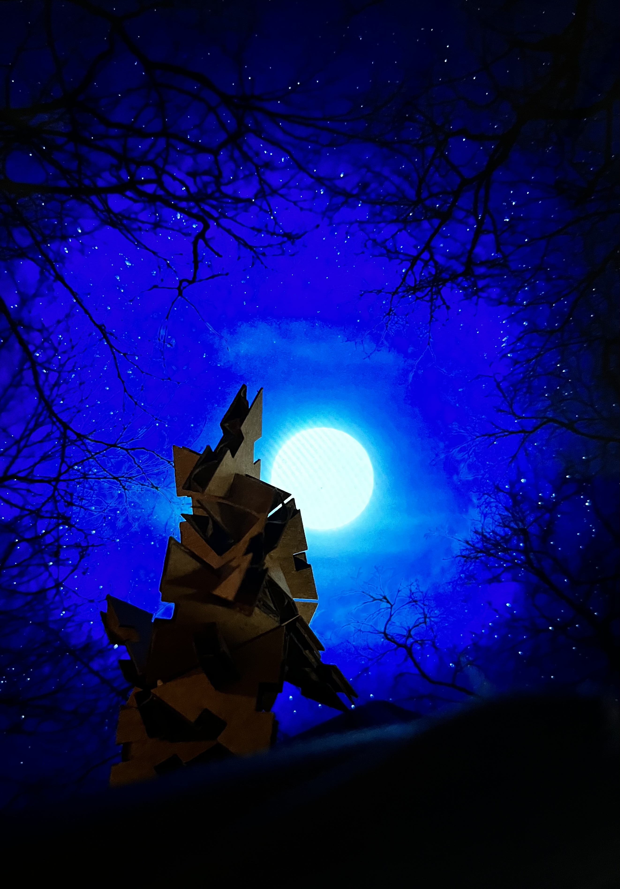
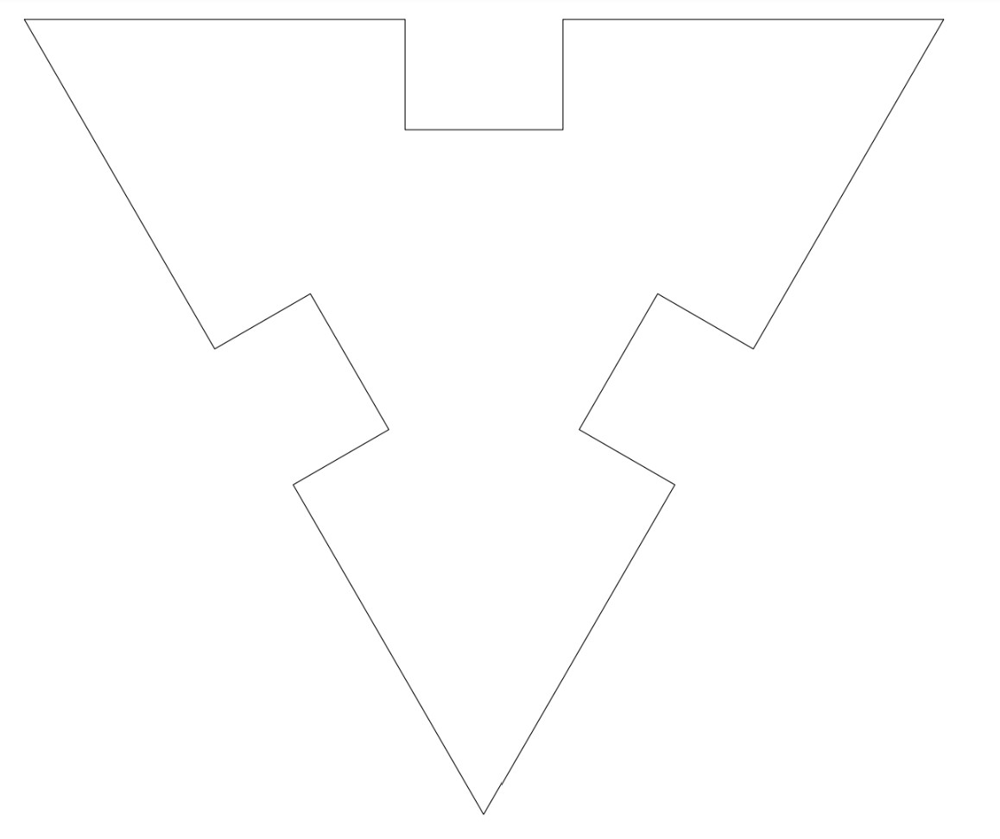
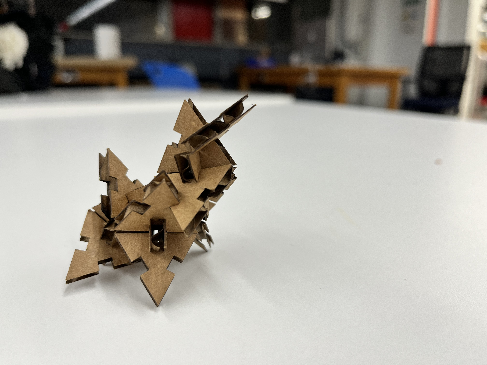

Week 2: The Second Dimension
Topics Covered:

- How To
- Fusion 360
- Vinyl Cutting
- Laser Cutting
- Explorations
- Press-Fit Constructions
- My Vinyl Stickers!
- Fusion 360 Tutorials
- Household Objects
The assignment:
- Create a press-fit construction kit that can be assembled in multiple ways, and accounts for lasercutter kerf. Expect to make multiple trips to the laser cutter, as pieces often won't fit together perfectly the first time.
- Work through a Fusion 360 tutorial, and document what you produce.
- Select at least 2 household objects or components from the lab (could be items you think you might include in your final project). Measure them using calipers, and model them in Fusion 360 (or other program). Create an assembly using these components, and document your work on your webpage. You may also incorporate items from other 3D model repositories like GrabCad.
1. Create a Press-Fit Construction Kit: Shurikens
 When I was little, my dad gave my brother and me this fun magnetic ball of polyhedrons to make shapes with.
(With some modern Googling, I can now say that it was Roger von Oech's Ball of Whacks,
a 30-sided rhombic triacontahedro made up of 30 “golden ratio” rhombic pyramids.)
When I was little, my dad gave my brother and me this fun magnetic ball of polyhedrons to make shapes with.
(With some modern Googling, I can now say that it was Roger von Oech's Ball of Whacks,
a 30-sided rhombic triacontahedro made up of 30 “golden ratio” rhombic pyramids.)
I did NOT make that, but it did inspire me to make a triangle-shaped press-fit kit that would be "airtight," so to speak and somewhat resemble what I played with. The result are these fun little "shurikens," as I call them.
Behold the process:
First, a triangle.
Next, I set a parameter I called "thickness" for the width of the cut-ins + kerf.
I made the cut-ins extend to the midpoint of the line segment from the start of one side of the cut-in to where it intersected with the adjacent cut-in side. This way, when the triangles were press-fit, they would be "airtight" or flush, so to speak.
I fiddled around a lot, and eventually got this! Tada! 
IRL
Wolfy!

2. Work through a Fusion360 Tutorial: Birdy
I worked through this YouTube tutorial from KiraKira3D to make a little 3D birdo!
Easy as:
- Draw guidelines with "Fit-point spline" that generally resemble a bird (perhaps with the help of a picture)
- Clip art bird I used to make guidelines:
- Clip art bird I used to make guidelines:
- Creating circles on many "offset planes."
- Lofting those circles together to make a volumetric shape.
- Extruding and taperinga beak.
- Extruding a rectangle to cut away from the base so it's flat and stand-uppable.
3. Make an Assembly of Household Objects
Honestly, I'm not sure what this part of the assignment really meant (what is an assembly?), but I tried my best!
I measured 3 components with calipers:
- Cup